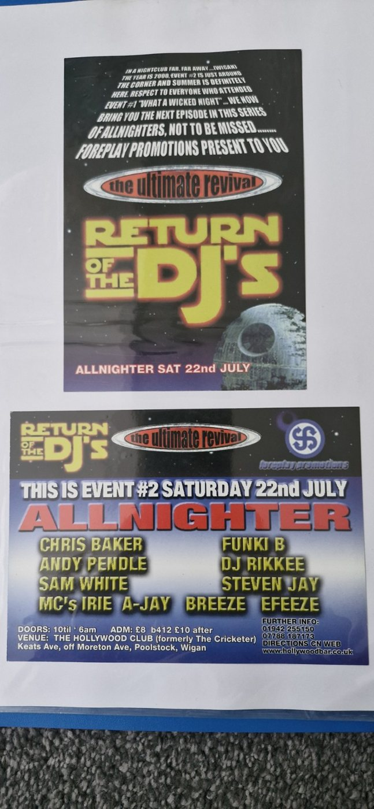

FLYER MUSEUM RECORD
Return of the DJs
Foreplay Promotions
Later regional club flyer showing the archive continuing into hard house and local promoter history.
DateSaturday 22 July
VenueThe Hollywood Club
Town / AreaWigan
PromoterForeplay Promotions
YearTBC
Ticket / PriceTBC
Linked DJs / MCs / Live PAs
Flyer Preservation Credit
Original flyer scan supplied courtesy of James Scrimgeour — RaverFlyerMan.
Follow James on TikTok: @raveflyers
Original flyer scan supplied courtesy of James Scrimgeour — RaverFlyerMan.
Follow James on TikTok: @raveflyers